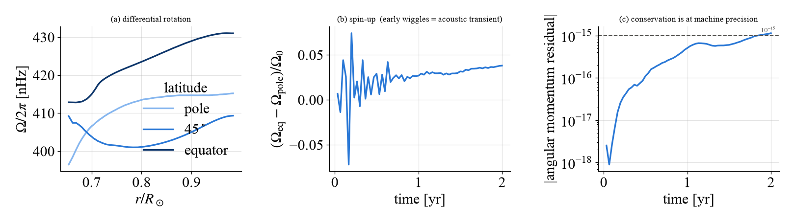
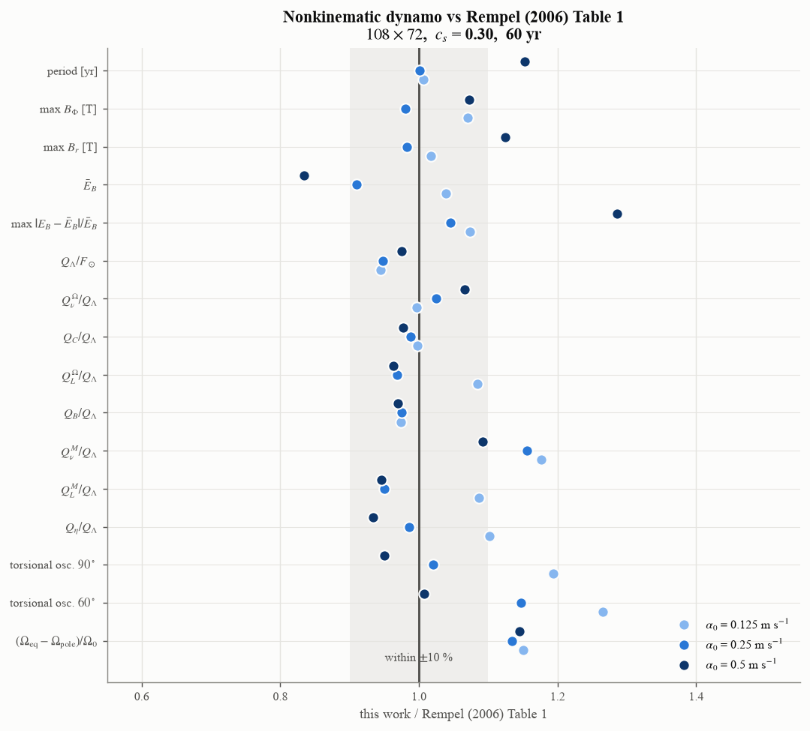
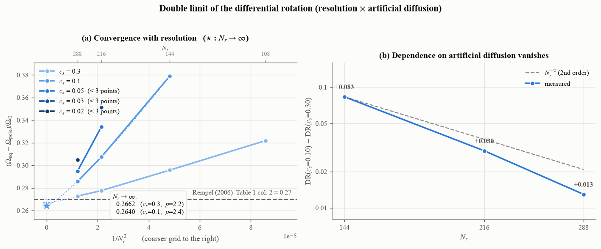

Rempel (2006) を再現する
原論文の表 1・図 3・図 4 を再現する手順。計算量が要るので、まず 5 分で動く例で仕組みを確かめてから本番に進むことを勧める。
0. 5 分で動かしてみる
python examples/rempel2006/quickstart.py out/
48 \(\times\) 32 の粗い格子で参照モデルを 2 年緩和させ、
\(\Lambda\) 効果が差動回転を作りはじめること
角運動量が machine precision (:math:`10^{-15}`) で保存すること
エネルギー収支の各項
を表示して図を保存する。実測 5 分 (最初の 1 回は numba の JIT を含む)。
{kind=link}

quickstart.py が出す図。(a) 2 年ではまだ差動回転が育っていない。
(b) 最初の振動は音波の過渡。(c) 角運動量の残差が
\(10^{-15}\) 以下、つまり倍精度の丸め誤差の水準にある。
Important
この格子と年数では**論文値と合わないのが正しい**。緩和は 108 \(\times\) 72 でも 40 年かかる。合わないことを確かめるのが目的。
Note
runs/ と examples/ の各スクリプトは**リポジトリに入って
いるもので、pip でインストールされるパッケージには含まれない**。
使うにはリポジトリを clone すること。パッケージ本体
(import S2MFD) だけでも同じことはできる —
スクリプトはその使い方の例でもある。
1. 参照モデルを緩和させる
磁場なしで流体を回し、\(\Lambda\) 効果が作る差動回転と子午面流を得る。
export S2MFD_PARFILE=parameters/rempel06_paper.py
python runs/relax_scan.py 108 72 40 uniform_rotation ref108 \
sld_cs_factor=0.30
引数は N_r N_theta 年数 下部境界 タグ。結果は
results_rempel/ref108/ に出る (state.npz = 最終状態、
history.npz = 時系列)。
格子 |
\(\Delta t\) |
ms/step |
40 年 |
推奨スレッド |
|---|---|---|---|---|
108 \(\times\) 72 |
167 s |
4.0 |
8 時間 |
3 |
144 \(\times\) 96 |
133 s |
4.4 |
12 時間 |
4-5 |
216 \(\times\) 144 |
84 s |
7.8 |
33 時間 |
8 |
288 \(\times\) 192 |
63 s |
8.7 |
49 時間 |
12-16 |
並列度は S2MFD_PARALLEL で決める (OMP_NUM_THREADS ではない)。
格子が小さいと 2-3 スレッドで頭打ちになる。
飽和したかは傾きで確かめる。 python runs/convergence.py が
\(dDR/dt\) と緩和曲線の外挿を出す。人工拡散が弱いと緩和の時定数が
数百年になり、100 年走らせても飽和しないことがある。
2. 磁場を入れてダイナモを回す
python runs/dynamo7.py 108 72 0 60 dyn_a125 full \
alpha0=12.5 magnetic_buoyancy=1 sld_cs_factor=0.30 \
init=results_rempel/ref108/state.npz
0 は「追加の緩和年数」(init から始めるので 0)、60 がダイナモの
年数。周期が 18 年なので、周期を測るには 2 サイクル (40 年) 以上要る。
108 \(\times\) 72 で 60 年が約 10 時間。
論文の 3 ケースは alpha0 = 12.5 / 25.0 / 50.0 [cm/s]
(= 0.125 / 0.25 / 0.5 m/s)。full を kinematic にすると
ローレンツ力を切った参照解 (図 3) になる。
3. 表 1 と突き合わせる
python runs/table1.py dyn_a125:12.5
タグ:alpha0 の形で複数指定できる。周期・磁場の最大値・
トーショナル振動・エネルギー交換項を論文値と並べて比を出す。
{kind=link}

60 年完走した 3 ケースの結果。灰色の帯が \(\pm10\) %。
Note
振幅を測るときはドリフトを引く。 まだ成長している解では、
永年変化が「サイクル変動」に乗る。table1.py は 18 年幅の移動平均を
引いた値と生値の両方を出す (実測で 0.108 対 0.51 と 5 倍違った)。
4. エネルギー収支を確かめる
python runs/budget_check.py dyn_a125
python runs/budget_check.py --relax ref108
原論文は表 1 の注で「エネルギー交換項の精度は 0.001 程度」と明記して いる。同じ基準で見られる。
Warning
残差を読むときは**左辺の** \(dE/dt\) を落とさないこと。 成長中のダイナモでは左辺が入力の 10-25 % ある。
5. 収束性を調べる
ここがこの実装の付加価値。 解像度と人工拡散の 2 つを独立に振る。
for cs in 0.30 0.10 0.05; do
for n in 108 144 216 288; do
python runs/relax_scan.py $n $((n*2/3)) 40 uniform_rotation \
s${n}_cs${cs} sld_cs_factor=$cs
done
done
python runs/convergence.py --extrap
{kind=link}

粗い格子の状態を種にすると過渡を飛ばせる (init= と
runs/regrid.py)。全部そろえると数百 CPU 時間になるので、
まず \(c_s = 0.30\) の系列だけで 108 → 288 を通すとよい。
よくある落とし穴
症状 |
原因 |
|---|---|
発散する |
人工拡散が弱すぎる。粗い格子ほど下限が高い (72 \(\times\) 48 では \(c_s\gtrsim0.10\)、 108 \(\times\) 72 では 0.03) |
収支の残差が大きい |
左辺の \(dE/dt\) を落としている。または \(E_\Omega\) を \(\Omega_0\) 込みで評価している |
振動の振幅が論文の数倍 |
永年ドリフトを引いていない |
診断の値が桁違い |
ゴーストセル込みで |
収束表が古い値を出す |
同じ (格子, cs) で複数のランがある。 |